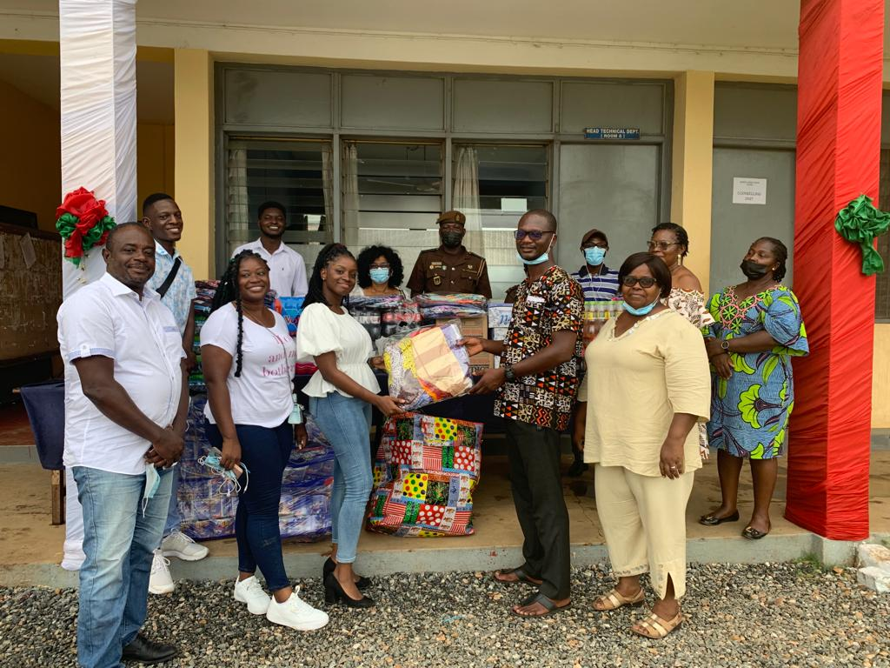
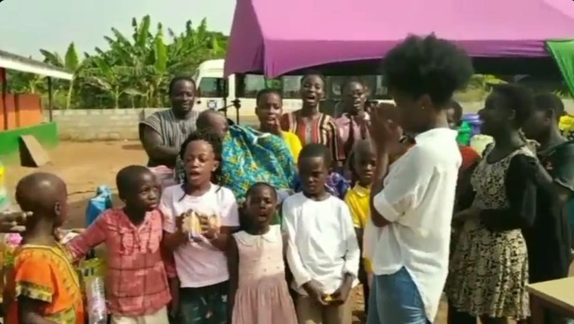

Our Journey in Pictures
Explore our photo gallery to see Early Smile Foundation in action. From our donation projects to community engagement events, these images capture the smiles, the progress, and the lives we've touched since 2019. We are unable to post the faces of most of our recipients due sensitivity of images, child protection rights and individual requests.
Smiles from our Donation Projects

Annual community projects
 As part of our annual activities led by Ms. Elizabeth Cornell Afrakomah Awuku we made a donation to the Senior Correction Center on 27th December, 2021. The theme this year was "The future belongs to the youth". We decided to reach out to a sector of the youth population that happens to be locked away. The initiative was to advocate for necessary reforms in juvenile justice while supporting the material needs of the correctional centre. We believe in the future of these boys and are hopeful that continuous advocacy for reforms in the juvenile justice system will help better reform, rehabilitate and successfully reintegrate them into our society. We donated food items, toiletries, snacks and male clothings to support the upkeep of the wards. Miss Elizabeth Cornell after presenting the items thanked the oficials for welcoming the team and deligently serving the nation and helping the team put smiles on the faces of the boys
The Potter's Village Foster Home located at Dodowa was founded in May 2000 by Dr (Mrs) Jane Irina Adu, a retired teacher. The home currently has 131 inmates, 12 of them in tertiary institutions (one enrolled at the University of Cape Coast while the rest are in Technical Universities and Vocational Institutions), and nine have completed Senior High School and are awaiting entry into the universities. We were warmly welcomed by Dr (Mrs) Jane Irina Adu and the ladies in charge of catering for the children on 30th December, 2019. This year's theme focused on impacting children who do not have the direct influence of parental guidance from biological relatives. After presenting the items to the orphanage, Ms. Elizabeth Cornell Afrakomah Awuku expressed her joy to have the opportunity to give out to the society on her birthday. She asked the kids about their favorite subjects in school and was thrilled to find some fascinated about mathematics at a very young age. She urged them to keep and hold onto that drive and fire for mathematics as it is the bedrock of many fields. The children said goodbye by singing a happy birthday song to her.
On 30th December 2022, Early Smile Foundation with the help of its supporters and medical officials was able to donate essential items for new babies to the Korle Bu Teaching Hospital - (Child health unit and Obstetric unit) and take care of the medical bills of young mothers who could not afford it at the Mamprobi Polyclinic. This has given these mothers a few months' worths of breathing room to help them fight depression and take care of their babies. Our founder, Ms. Elizabeth Cornell Afrakomah Awuku was glad to share her birthday with the beautiful souls we met. Also, she was thrilled to meet Bridget, a preterm baby boy who was abandoned by his mum at the Korle Bu Teaching Hospital. The nurses gave him the name Bridget, after his mother. It is our prayer these babies continue to smile and stay in good health.